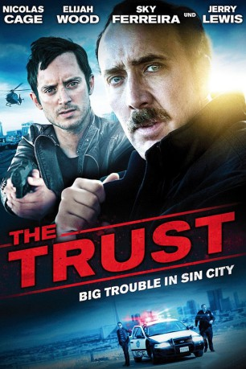

gesehen am 13.04.2016
gesehen am 13.04.2016Alternativ: The Trust gesehen am 13.04.2016
 
 IMDB-Wertung: 5.4 / 10
IMDB-Wertung: 5.4 / 10  Metascore:
Metascore: 
David Waters (Elijah Wood) und Jim Stone (Nicolas Cage) sind zwei korrupte Polizisten aus Las Vegas, die Probleme haben, ihren Lebensstandard allein durch ihr Einkommen halten zu können. Als sie mitbekommen, dass örtliche Drogendealer im Windschatten der Casino-Gastronomie ihre eigene Bank gegründet haben, reift daher schnell der Entschluss, der Unterwelt auf illegale Weise ein paar Moneten abzuknöpfen. Die Cops klügeln einen Plan aus, um den Safe mit vermeintlich wertvollem Inhalt in die Finger zu bekommen. Zunächst läuft alles wie am Schnürchen, doch als sie herausfinden, was sich in dem Tresor befindet, ist es für die beiden Freunde zu spät, um einen Rückzieher zu machen und sie geraten in einen Strudel aus Gewalt und Korruption.
Jahr: 2016
Dauer: 92 Minuten
FSK: 16
Land: USA Studio: Saban FilmsTonspuren: DTS - ,
Untertitel: Deutsch,
Auflösung: 1080p (1920x1040) Größe: 6707 MB
Regisseur: Alex Brewer, Benjamin Brewer
Drehbuch: Benjamin Brewer, Adam Hirsch
Soundtrack: Reza Safinia
Darsteller:
 Nicolas Cage als Stone
Nicolas Cage als Stone Elijah Wood als Waters
Elijah Wood als Waters Sky Ferreira als Woman
Sky Ferreira als Woman Ethan Suplee als Detective
Ethan Suplee als Detective Steven Williams als Cliff
Steven Williams als Cliff Jerry Lewis als Stone's Father
Jerry Lewis als Stone's Father Kevin Weisman als Roy
Kevin Weisman als Roy Christie Beran als Waitress at Diner
Christie Beran als Waitress at Diner Jay Hieron als Man in Armoire
Jay Hieron als Man in ArmoireDatei: X:\2016(N-Z)\Trust Big Trouble in Sin City, The (2016, FSK16, 1920x1040).mkv seit 06.04.2016
Festplatte: HD 2016(A-Z)
 Es gibt insgesamt 182 Filme in der Gruppe '2016(N-Z)'
Es gibt insgesamt 182 Filme in der Gruppe '2016(N-Z)'